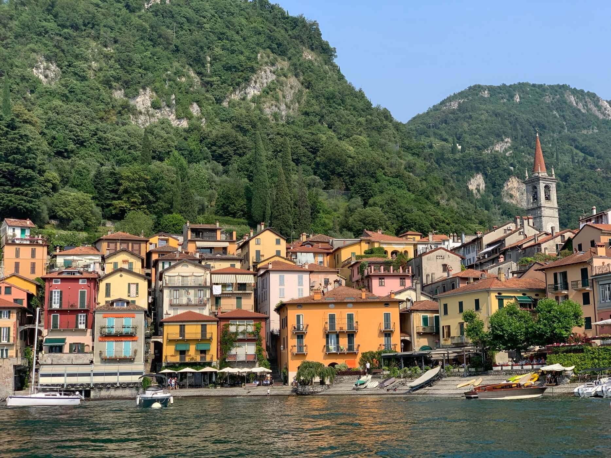
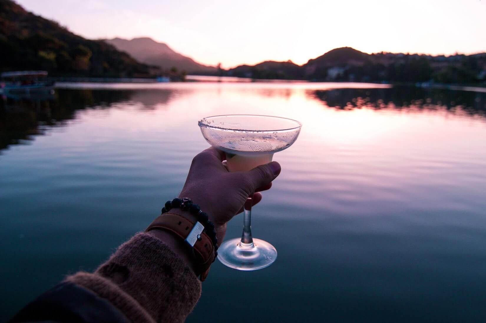

Блог
В глубоком Комо: сколько стоят выходные на известном озере

Говорят, на озере Комо отдыхают только богатые немецкие пенсионеры, сутки в отеле выходят по цене авиаперелёта, а где-то по периметру можно найти виллы Джорджа Клуни и Брэда Питта. Мы собрали эти и другие страшилки про легендарное озеро и разобрались, стоит ли пугаться заранее. Хотя остаться среди вилл голливудских красавцев было бы не так и ужасно.
Как добраться
Чтобы приехать на озеро Комо, оптимальней всего лететь до Милана. Весной можно сгонять туда–обратно за 7000–8000 рублей. Из аэропорта Мальпенса в центр города дешевле всего уехать на автобусе компании Terravision: поездка в одну сторону обойдётся в 8 евро, если оформлять билет через сайт.
С центрального вокзала Милана в Комо отправляются электрички Trenitalia каждые 30 минут. Билет второго класса по маршруту Milano Centrale — Como S. Giovanni стоит 4,80 евро, дорога занимает около 40 минут. Перед тем как сесть в поезд, прокомпостируйте билет в специальных автоматах на перроне или внутри вокзала. А ещё не забывайте, что, если приобрести онлайн не получилось, а в билетный автомат выстроилась очередь, всегда можно прикупить билетик в Tabaccheria — небольшом магазинчике с сигаретами, конфетами и газетами. Они выглядят снаружи примерно вот так. Цена билетов там такая же, как везде.
В общей сложности, чтобы добраться из Москвы до Комо и обратно в ближайшие три месяца, у вас уйдёт около 10 000 рублей. Пока не пугает.
Где провести ночь
Конечно, озеро Комо — идеальное место, чтобы шикануть. Поэтому здесь можно спустить 38 000 рублей за ночь в люксовом номере пятизвёздочного отеля VISTA Palazzo Lago di Como. Но если не впадать в крайности, то арендовать приятные апартаменты или номер среднего класса в «трёх звёздах» стоит 3500–5000 рублей. Иногда в эту стоимость даже завтрак входит.
Где поесть
Если тянет в непринуждённую обстановку итальянской пиццерии, загляните на огонёк в Pizzeria da Benito. Говорят, это заведение принадлежит семье, которая из поколения в поколение передаёт секреты кулинарии и сервиса. Интерьер здесь простой, а цены умеренные: закуски стоят 5–11 евро, паста — 7–12 евро, пицца — 6–10 евро, бокал вина — 5 евро.
При более скромном бюджете на помощь придут супермаркеты и McDonald's. В местном демократичном Carrefour на 10 евро всегда можно объесться. За эти деньги вы получите упаковку моцареллы, итальянской ветчины, пару круассанов и йогуртов, свежий багет и томаты черри.
Чем заняться
Самое важное, что нужно успеть, — это сплавать на пароме или лодке и поглазеть на горы и воду с берега. В первом случае берите курс на одну из исторических вилл в окрестностях озера. Если где-то и существует идеальный баланс между архитектурой и природной красотой, то он здесь. На виллах живут, сочетаются браком, устраивают безумные фотосессии, проводят художественные выставки и даже конференции. Например, билет в одну сторону на моторной лодке по маршруту Комо — Белладжио стоит 10,50 евро. Там находится историческая вилла Мельци, окружённая ботаническим садом.
Посидеть возле озера, размышляя о высоком, можно вообще бесплатно. Причём так поступают не только туристы с одним рюкзаком за спиной, но и почтенные пожилые пары в шляпах, и гомонящие подростки, и путешественники-одиночки, и влюблённые парочки. Короче, можно идти вдоль берега довольно долго, пока не найдётся спокойное свободное место, где вы развернёте сыр, откроете вино и насладитесь жизнью.
И наконец, в любом итальянском городе нужно увидеть главную площадь и дуомо — так называют важные католические соборы в Италии. В окрестностях Комо это Cattedrale di S.Maria Assunta di Como. Позднеготический фасад, окно-роза, изящные статуи, купол в стиле рококо — если любите архитектуру, проведёте возле собора 20–30 захватывающих минут. Потом смело идите внутрь: там вас ждут росписи учеников Леонардо да Винчи, ценные гобелены эпохи Возрождения и витражи Бертини.
Выходные прошли, и если шенген вам дали не на два дня, а больше, возвращайтесь в Милан за прогулками по кладбищу и панцеротти.